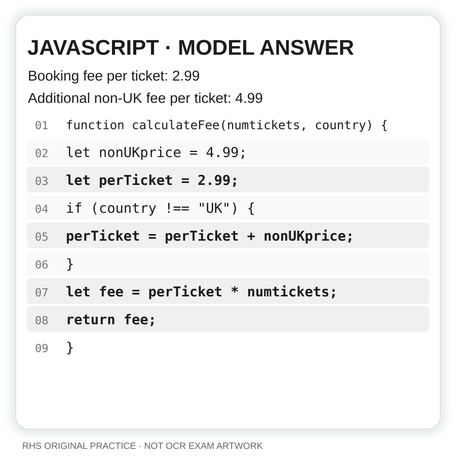

Q3(c) · JavaScript · 4 marks
A swimming pool charges 2.99 per ticket, plus a 4.99 surcharge per ticket for customers outside the UK. Complete the four blanks in calculateFee(numtickets, country).
ANSWER · MODEL
2.99; nonUKprice; numtickets; return. One mark per blank.
